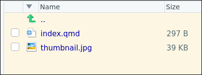

Workflow: ¿cómo crear un post? (4ª parte del taller)
El blog que hemos creado con Quarto y que estamos adaptando a nuestras necesidades, contiene de fábrica 2 posts muy sencillos. Sus títulos son: “Welcome to my blog” y “Post with code”.
Más adelante borraremos estos 2 posts, pero ahora mismo los vamos a utilizar de ejemplo para crear un nuevo post. Será en la sección siguiente, de momento veamos donde están los archivos que generan los posts de nuestro blog.
¿Donde están los posts del blog?
Los ficheros .qmd que generan los posts están en la carpeta posts de nuestro Rproject que genera el blog.
Cada post está en una carpeta diferente. Veámoslo:

postsComo ves, en la carpetaposts hay:
una subcarpeta para cada post.
el archivo
_metadata.yml. Lo veremos más adelante, pero sirve para generar opciones comunes a todos los posts de la carpetaposts.
Contenido de cada subcarpeta de ./posts/
Veamos el contenido de una de las carpetas que generan los posts, por ejemplo la carpeta /welcome/:

welcome que genera el post titulado “Welcome to my blog”
index.qmd”Como ves, la carpeta /welcome/ que genera el primer post del blog contiene 2 archivos:
index.qmd: es realmente el archivo que genera el post. Veremos su contenido más adelante.thumbnail.jpg: sencillamente un archivo con una imagen que será usado al generar el post.
Creando un nuevo post
De momento, para generar un nuevo post lo que haremos será crear una nueva subcarpeta dentro de ./posts/, ponerle nombre y pegar allí los archivos que hay en la carpeta de uno de los dos posts de prueba. Por ejemplo:
Bueno, pues ya lo tenemos, ya tenemos un nuevo post, solo que, como no hemos cambiado el contenido de
index.qmdni `tumbnail.jpg, pues nuestro tercer post de nuestro blog será idéntico al primer, al post de bienvenida.Evidentemente puedes cambiar estos archivos para que el tercer post no sea idéntico al primero. Hagámoslo.
En el siguiente tutorial veremos en profundidad las posibilidades que nos ofrece Quarto para escribir posts.
Resumen
Referencias
(Algunos artículos sobre creación de blogs en Quarto)
- Eric Ekholm. 2022. Modifying the Default Quarto Blog Structure es una web con blog . GOOOOD